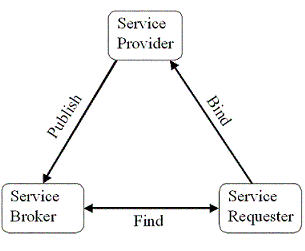

| Concepto: Introduction to Service-Oriented Architecture |
 |
|
| Elementos relacionados |
|---|
IntroductionComponent-based architecture/component-based development is a RUP practice because components are an effective means of dividing a complex system into manageable parts and because components enable reuse. Service-Oriented Architecture (SOA) is a specialization of component-based architecture based on the use of published and dynamically discoverable services. What is SOA?A Service is a logical component that defines a set of interfaces and that is not allocated to a defined user but to multiple clients which can share it. A Service Provider is a component that implements the service interfaces. Services and service providers are published and accessed via a repository called a Service Broker. These services can be discovered and accessed by other components (user applications or other services) through the service broker, following the principles shown in the figure below.
 This separation between the service interfaces and their implementation by the service provider allows for multiple providers for the same service and for providers to be added or replaced dynamically without impact on the service requesters. Service requesters can dynamically discover the services and the related service providers they need. The publish/discover principle makes SOA a more flexible and more loosely coupled architecture than traditional architectures. This is particularly useful when integrating or composing disparate systems, such as legacy systems with packaged applications and J2EE or .Net applications. See Concept: Enterprise Application Integration, Application Interface Level Integration for more on this kind of integration. Services CharacteristicsThe following are key characteristics of services:
SOA and Web ServicesEverything discussed so far can be done with different technologies; CORBA and .Net are an example of such technologies. So why are web services so closely associated with service-oriented architecture? Web services are based on internet standards, such as XML (eXtensible Markup Language) to format data, SOAP (Simple Object Access Protocol) to communicate, and WSDL (Web Services Description Language) and UDDI (Universal Description, Discovery and Integration) to publish descriptions. The usage of these widely accepted standards provides a broader interoperability among different vendor's solutions, making the implementation of SOA easier and less expensive. A more detailed discussion about using web services and component-based development to implement an SOA can be found in the Whitepaper: Using Service-Oriented Architecture and Component-Based Development to Build Web Service Applications. |
© Copyright IBM Corp. 1987, 2006. Reservados todos los derechos. |